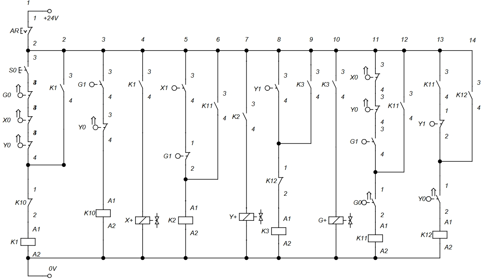
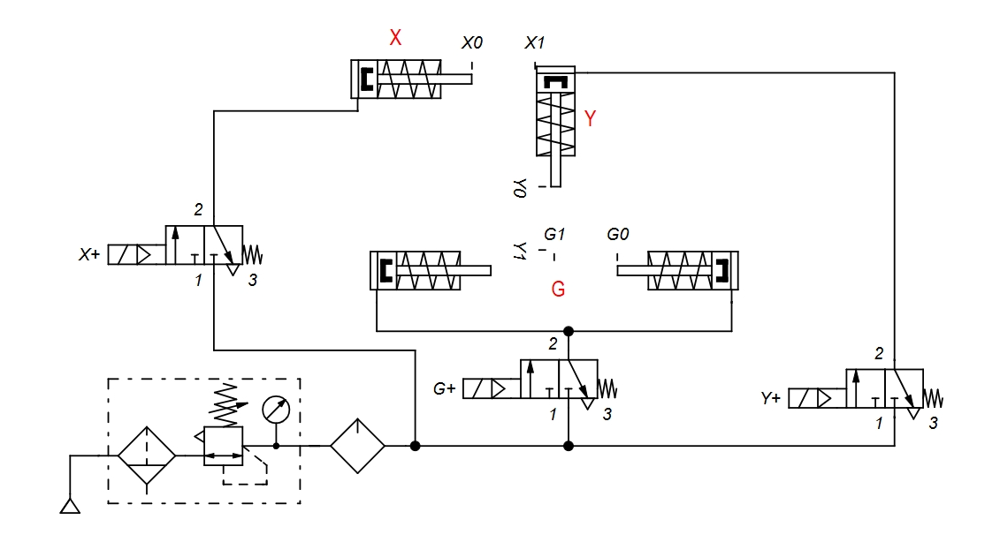

Simulation Gallery
Screenshots captured during the FluidSIM simulation showing the different stages of the automated pick & place cycle.
.png)
.png)
.png)
.png)
.png)
.png)
.png)
.png)
.png)
Electro-Pneumatic automated Pick and Place using FluidSIM and Electrical control schematic.
The Electro-Pneumatic Pick & Place System is an industrial automation project designed and simulated using FluidSIM. The system automatically transfers a workpiece from one position to another using pneumatic actuators controlled by an electrical relay logic circuit, improving productivity, precision, and repeatability.
Manual pick-and-place operations are repetitive, time-consuming, and prone to positioning errors. This project automates the handling process to reduce operator effort while ensuring accurate and reliable part transfer.
Automate the pick-and-place process.
Ensure safe and synchronized actuator movements.
Reduce manual handling.
Verify the system using FluidSIM simulation.
Electro-Pneumatic
FluidSIM
Electrical relay logic
2 Double-Acting Cylinders + 1 Pneumatic Gripper
✅ Completed
Filters, regulates, and lubricates the compressed air.
Horizontal movement of the gripper, Vertical movement of the gripper, Grasps and releases the workpiece..
Control the extension and retraction of the cylinders and gripper.
Detect actuator positions.
Execute the sequential control logic.
Pneumatic logic AND element that ensures required conditions are satisfied before the next operation.
Initiates the automatic cycle.
Stops the system safely when required.
The electrical control circuit uses relays, push buttons, limit switches, and solenoid coils to control the electro-pneumatic system. Position sensors provide feedback to ensure that each actuator completes its movement before the next operation begins, enabling a safe and reliable automatic pick-and-place sequence.

The FluidSIM model combines a pneumatic power circuit with an electrical relay control circuit. Solenoid-operated 5/2 valves actuate the cylinders and gripper, while limit sensors provide position feedback to the relay logic. This configuration guarantees that each movement occurs only after the previous step has been completed.

Screenshots captured during the FluidSIM simulation showing the different stages of the automated pick & place cycle.
The pick-and-place cycle was executed automatically, transferring the workpiece from the pickup location to the destination without manual intervention.
All actuators operated in the correct order, ensuring smooth and synchronized movements throughout the cycle.
The electro-pneumatic system was successfully tested and validated using FluidSIM.
The workpiece was picked, transported, and released at the designated location with consistent positioning.
Position sensors accurately detected each actuator's state, allowing the electrical control circuit to execute the sequence safely and reliably.
Coordinating three actuators
Developed a sequential relay logic circuit that synchronized the horizontal cylinder, vertical cylinder, and gripper.